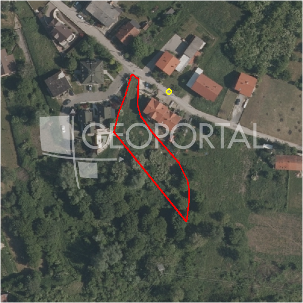

#3840 · Zagreb (Markuševec),građ. zemlj.1600m2 sa idejnim rješenjem za 3 stana
Markuševec, Podsljeme, Grad Zagreb · zemljiste · njuskalo · status active · oglas ↗
Ocjena
- Score
- 65 rule 65 · LLM – · 12.09.2026.
- RLV
- 122.000 € (76 €/m²) · ratio 1,02
- Ukupna investicija
- 944.000 €
- GBP
- 400 m²
- Feedback
- –
- CRM
- –
Sažetak: Prodaje se građevinsko zemljište od 1.602 m2 u Markuševcu (Zagreb, Podsljeme), prema lokacijskoj informaciji dijelom u stambenoj zoni S (cca 1.050 m2) uz najveću izgrađenost 20% i koeficijent iskorištenosti 0,5, s izrađenim idejnim rješenjem za tri dvoetažna stana. Za obiteljsku kuću je 2007. bila izdana građevinska dozvola, no za projekt od tri stana prema idejnom rješenju dozvola u tekstu nije navedena kao ishođena.
Oglas
- Cijena
- 120.000 € (75 €/m²)
- Površina
- 1.600 m² · DKP 1.607 m² (odstupanje 0,4 %)
- Prodavatelj
- agencija · RE/MAX Commercial, Unitas Nekretnine d.o.o.
- Prvi put
- 11.09.2026. · zadnje 11.09.2026. · 0 d na tržištu
Povijest cijene
| Datum | Cijena |
|---|---|
| 11.09.2026. | 120.000 € |
Flagovi
zone_uncertainty zona nije pregledana (reviewed: false) (−5)djelomicno_gradivo djelomicno_gradivo
gbp_iz_oglasa GBP preuzet iz oglasa (gbp_claim)
llm_pending LLM ekstrakcija/ocjena nedostupna
Komponente score-a
| rlv | {'gbp': 400.0, 'kis': 1.2, 'nkp': 328.0, 'noi': None, 'rlv': 122435.82608695654, 'ratio': 1.0202985507246378, 'value': None, 'phases': 1, 'profile': 'zagreb_visestambeno', 'gdv_neto': 1128320.0, 'cost_soft': 26400.0, 'gdv_bruto': 1410400.0, 'kis_known': True, 'total_inv': 943600.0, 'cost_build': 660000.0, 'cost_other': 130000.0, 'cost_sales': 42312.0, 'demolition': False, 'gbp_source': 'min(kis,gbp_claim)', 'rlv_per_m2': 76.1999701805215, 'parcel_area': 1606.77, 'parcelation': False, 'roi_on_cost': 0.150919881305638, 'profit_at_ask': 142408.0, 'cost_demolition': 0.0, 'total_inv_phase': 943600.0, 'parcel_area_effective': 1058.86143, 'sale_price_per_m2_nkp': 4300.0} |
| hard | [] |
| info | ['djelomicno_gradivo', 'gbp_iz_oglasa', 'llm_pending'] |
| rubric | {'permits': {'max': 10.0, 'detail': {'permit': 'gradjevinska'}, 'points': 10.0}, 'physical': {'max': 10.0, 'detail': {'slope_pct': 15.43, 'road_access': 'yes', 'slope_points': 2.914}, 'points': 5.91}, 'liquidity': {'max': 10.0, 'detail': {'n_cuts': 0, 'points_cut': 0.0, 'points_days': 0.03333333333333333, 'seller_type': 'agencija', 'points_fresh': 1.0, 'price_cut_pct': None, 'days_on_market': 1, 'points_private': 0}, 'points': 1.03}, 'rlv_ratio': {'max': 40.0, 'detail': {'rlv': 122436, 'ratio': 1.02, 'asking_price': 120000.0}, 'points': 25.61}, 'zone_quality': {'max': 15.0, 'detail': {'no_upu': True, 'source': 'gis', 'zone_class': 'stambeno', 'zone_ideal': True, 'gp_uredjeni': True}, 'points': 12.0}, 'price_vs_benchmark': {'max': 15.0, 'detail': {'source': 'auto:Podsljeme', 'deviation': 0.531, 'ask_eur_m2': 75, 'benchmark_eur_m2': 160.0}, 'points': 15.0}} |
| weights | {'llm': 0.4, 'rule': 0.6, 'model': 0.0} |
| penalties | {'zone_uncertainty': 5} |
| raw_score | 69,5 |
| rlv_notes | ['gradivo 66 % čestice (1059 m²) — ostatak izvan gradive zone'] |
| flag_notes | {'max_gbp': 1928, 'total_inv': 943600, 'zone_code': 'S', 'zone_class': 'stambeno', 'zone_source': 'gis', 'zone_reviewed': False, 'commercial_pct': 0.0, 'commercial_source': 'zone_rule'} |
| caps_applied | [] |
GIS
- Čestica
- k.o. 335347, k.č. 14520 (pin_buffer, 0,85); k.o. 335347, k.č. 12930 (pin_buffer, 0,80); k.o. 335347, k.č. 14528 (pin_buffer, 0,79)
- Zona
- S (stambeno) · NIJE pregledana
- kig / kis / katnost
- 0,30 / 1,20 / Po+P+2+Pk
- GP / UPU
- uredjeni · UPU ne
- Pristup / nagib
- yes · 15,4 % (max 17,4 %)
- More
- –
- Zaštite
- Natura ne · zaštićeno ne · kulturno dobro ne
- Zgrade na čestici
- 0 %
- Match
- 0,85
Karta
Ortofoto (DOF)

RLV kalkulacija — pretpostavke
| gbp | {'value': 400.0, 'source': 'min(kis,gbp_claim)'} |
| kis | {'value': 1.2, 'source': 'gis'} |
| soft_pct | {'value': 0.04, 'source': 'profil'} |
| nkp_ratio | {'value': 0.82, 'source': 'profil'} |
| cost_other | {'value': 130000.0, 'source': 'profil: doprinosi+uređenje po m² GBP, financiranje+rezerva % gradnje'} |
| zone_share | {'value': 0.659, 'source': 'gis'} |
| parcel_area | {'value': 1606.77, 'source': 'dkp'} |
| asking_price | {'value': 120000.0, 'source': 'oglas'} |
| margin_on_cost | {'value': 0.15, 'source': 'profil'} |
| build_cost_per_m2_gbp | {'value': 1650.0, 'source': 'profil'} |
| sale_price_per_m2_nkp | {'value': 4300.0, 'source': 'benchmark:seed:Podsljeme'} |
| transfer_tax_and_acquisition | {'value': 0.06, 'source': 'profil'} |
Ekstrakcija iz oglasa
| permit | gradjevinska |
| gbp_claim | 400.0 |
| kig_claim | 0.2 |
| kis_claim | 0.5 |
| zone_claim | S |
| permit_date | 2007 |
| floors_claim | P+1 (potkrovlje ili uvučeni kat) |
| sea_row_claim | none |
| permit_content | izdana 2007. za izgradnju obiteljske kuće; za trenutni projekt od 3 stana postoji samo idejno rješenje temeljem lokacijske informacije |
| building_on_parcel | none |
Opis oglasa
GRAĐEVINSKO ZEMLJIŠTE 1.602 m² – MARKUŠEVEC, FRUŠČINJE s idejnim rješenjem za 3 stana Na prodaju je građevinsko zemljište površine 1.602 m² smješteno u mirnoj ulici Fruščinje u Markuševcu, jednoj od najpoželjnijih rezidencijalnih zona istočnog dijela Zagreba. Parcela se nalazi u drugom redu od glavne prometnice, što budućim vlasnicima osigurava dodatni mir, privatnost i ugodno okruženje za stanovanje. U neposrednoj blizini nalaze se javni prijevoz, škole, vrtići, sportski sadržaji, trgovine i svi ostali sadržaji potrebni za kvalitetan obiteljski život. PREMA VAŽEĆOJ LOKACIJSKOJ INFORMACIJI: • približno 1.050 m² nalazi se u zoni stambene namjene (S) • ostatak zemljišta nalazi se unutar zelene zone (Z) • najveća izgrađenost građevne čestice: 20% • najveći koeficijent iskorištenosti (ki): 0,5 • najveći GBP za samostojeću građevinu: 400 m² • najveća dopuštena visina: dvije nadzemne etaže, pri čemu se druga etaža oblikuje kao potkrovlje ili uvučeni kat ZA ZEMLJIŠTE JE IZRAĐENO IDEJNO RJEŠENJE Na temelju uvjeta gradnje iz lokacijske informacije izrađeno je idejno rješenje za izgradnju tri moderna dvoetažna stana s garažama i privatnim vrtovima. Predviđeni stanovi sastoje se od: PRIZEMLJE • dnevni boravak s blagovaonicom • kuhinja • ulazni prostor • gostinjski WC KAT • tri spavaće sobe • kupaonica • terasa Dodatno su predviđene garaže površine 17,80 m² te privatni vrtovi za svaki stan. DODATNA INFORMACIJA Za predmetno zemljište je 2007. godine bila izdana građevinska dozvola za izgradnju obiteljske kuće, što potvrđuje dugogodišnji građevinski potencijal lokacije. PREDNOSTI NEKRETNINE ✓ velika parcela površine 1.602 m² ✓ mirna lokacija u okruženju obiteljskih kuća ✓ stambena zona ✓ izrađeno idejno rješenje ✓ odličan potencijal za investicijski projekt ili gradnju za vlastite potrebe ✓ dobra prometna povezanost sa središtem Zagreba Sve informacije smatraju se pouzdanima, ali ih zainteresirani kupci trebaju samostalno provjeriti. Kupac plaća agencijsku proviziju u iznosu od 2% + PDV. Za dodatne informacije i razgledavanje: Ivana Farac M: 091 3355 004 RE/MAX Commercial